6.1.1 Instalación de GNS3
Para instalar GNS3, hay que acceder a la página oficial y pulsar en Free Download.
Si se quiere descargar para Windows o Mac hay que registrarse.
| 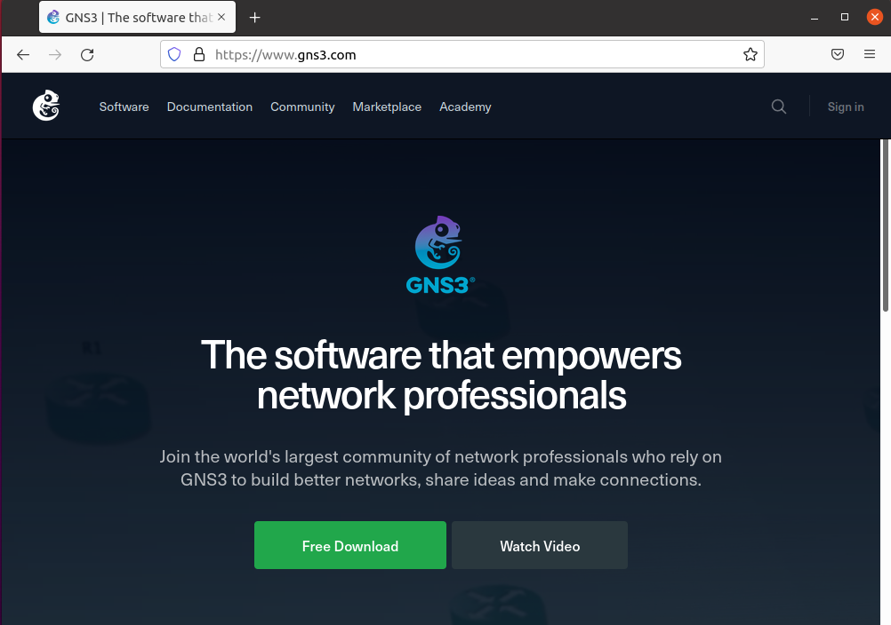 | 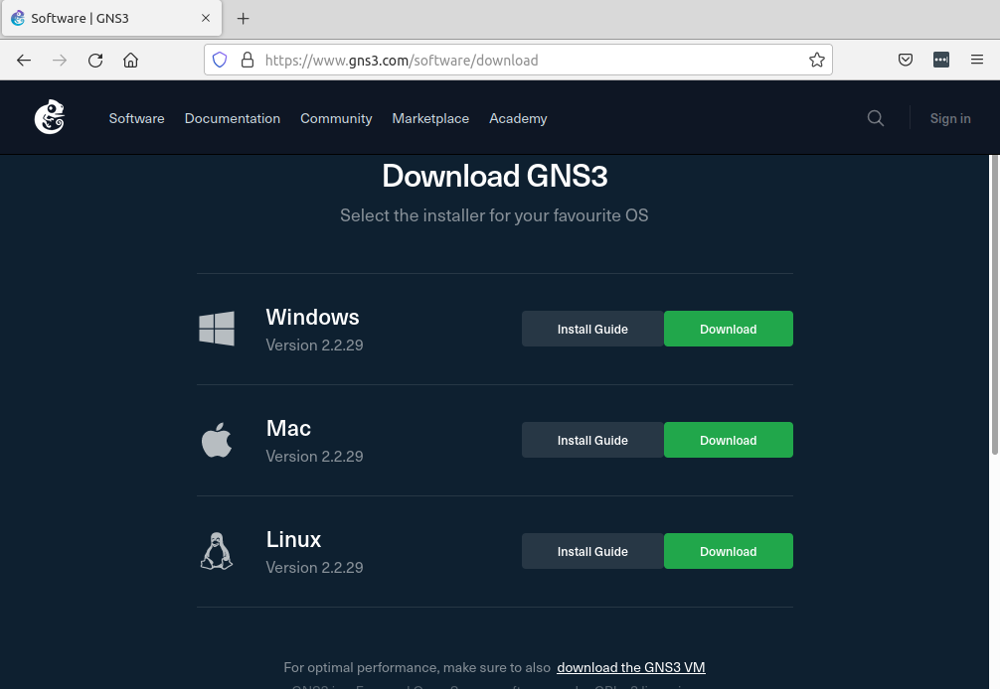 |
| Figura 4. Descarga de GNS3. | |
Para este caso de ejemplo, se accede a la Guía de instalación para Linux, ya que el equipo donde se instalará es Ubuntu Desktop 20.04.3 LTS.
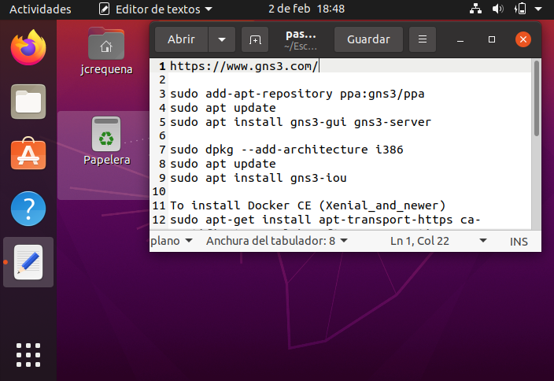
Figura 1. Equipo Ubuntu Desktop 20.04.3 LTS donde se instalará GNS3.
Esta guía, proporciona todos los pasos para su instalación tanto en Ubuntu como en Debian.
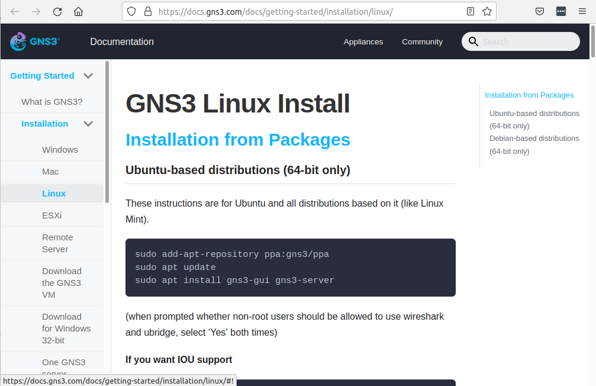
Figura 2. Guía de instalación de GNS3.
Los pasos a seguir para su instalación son los siguientes:
Paso 1. Introducimos los respositorio de gns3 mediante ppa, a continuación se realiza la actualización de los repositorios y para finalizar, se instala el paquete gui y server de gns3.
root@goofy:/#add-apt-repository ppa:gns3/ppa
root@goofy:/#apt update
root@goofy:/#apt install gns3-gui gns3-server
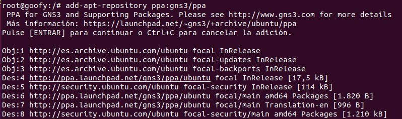
Figura 3. Repositorio gns3 mediante ppa.
Durante la instalación de gns3, el asistente realiza una serie de preguntas para realizar unas configuraciones iniciales.
1ª pregunta
Nos dice que hay que instalar/configurar Ubridge que es una aplicación simple para crear puentes de usuario entre varias tecnologías. Actualmente se admite el puente entre túneles UDP, Ethernet e interfaces TAP. La captura de paquetes también es compatible.
A la pregunta de si se desea que los no superusuarios puedan ejecutar gns3, respondemos que 'sí'.
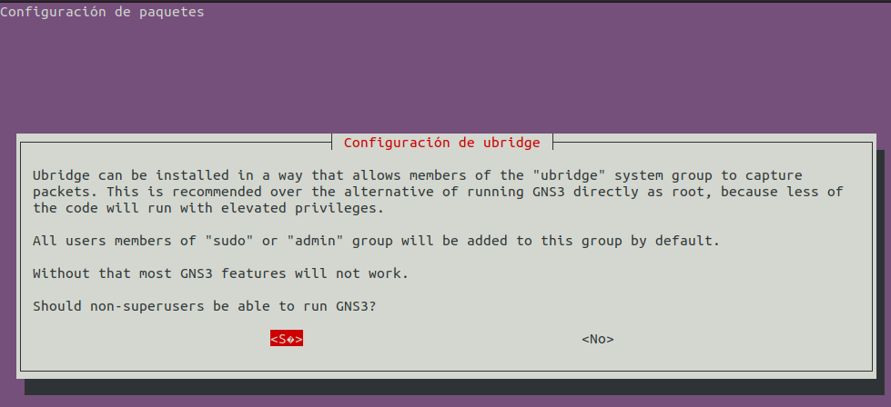
2ª pregunta
A la pregunta de si se desea que los no superusuarios puedan capturar paquetes para hacer las pruebas, respondemos que 'sí'.
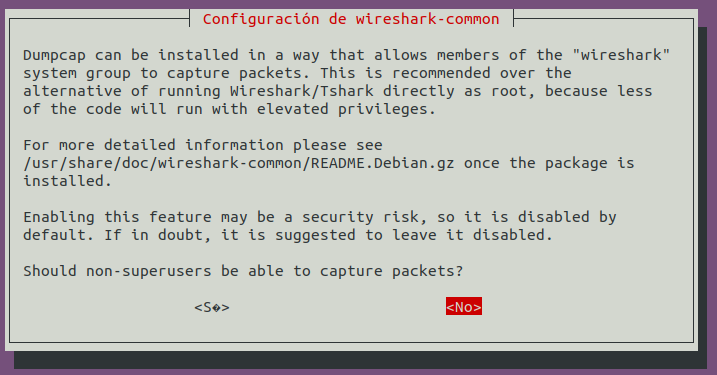
Paso 2. A continuación, para instalar el paquete de iou y dado que es de 32 bits, hay que configurar mediante dpkg para que permita instalar paquetes de 32 bits.
root@goofy:/#dpkg --add-architecture i386
root@goofy:/#apt update
root@goofy:/#apt install gns3-iou
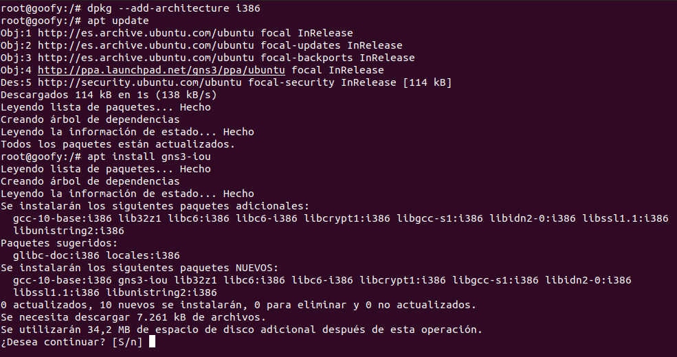
Figura 4. Instalación del paquete gns3-iou.
Paso 3. Como se ha indicado anteriormente, gns3 no simula sino que emula y para ello se nutre de diferentes vertientes, para este caso, se van a tener ciertos repositorios (elementos de red) que van a ir sobre docker y para ello, hay que instalar unas serie de dependencias que necesita.
root@goofy:/#apt-get install apt-transport-https ca-certificates curl software-properties-common
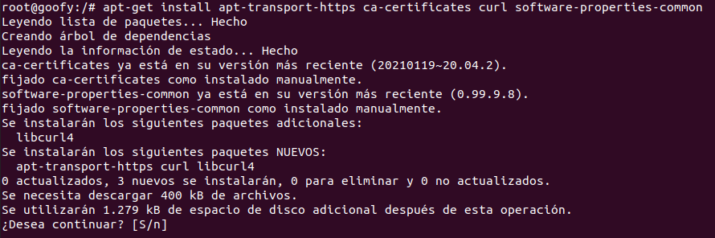
Figura 5. Dependencias de docker.
A continuación hay que instalar la key.
root@goofy:/#curl -fsSL https://download.docker.com/linux/ubuntu/gpg | apt-key add -
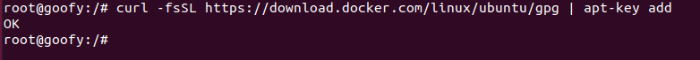
Figura 6. Instalar la key.
Y finalmente, el repositorio.
root@goofy:/#add-apt-repository "deb [arch=amd64] https://download.docker.com/linux/ubuntu $(lsb_release -cs) stable"
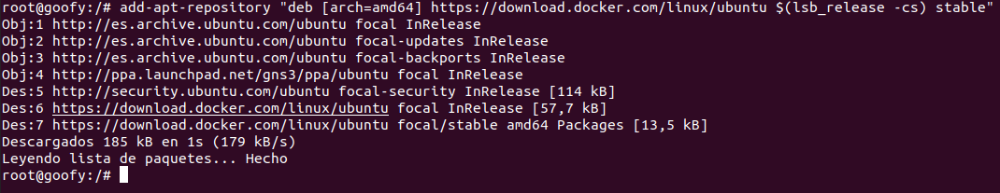
Figura 7. Instalar el repositorio.
Paso 4. A continuación, hay que actualizar nuestro repositorio local y luego, instalar docker-ce que es el Docker Community. También está el Docker Enterprise pero es de pago.
root@goofy:/#apt update
root@goofy:/#apt install docker-ce
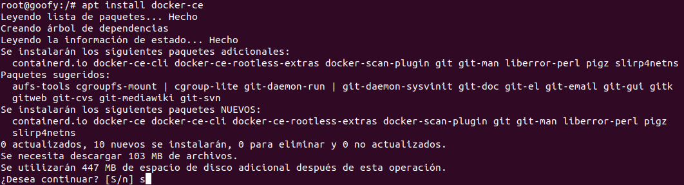
Figura 8. Docker Community.
Paso 5. En este momento, hay que realizar unas modificaciones sobre el usuario jcrequena (usuario que utilizará gns3) para agregarlo a los grupos ubridge, libvirt, kvm, wireshark y docker.
root@goofy:/#usermod -aG ubridge jcrequena
root@goofy:/#usermod -aG libvirt jcrequena
root@goofy:/#usermod -aG kvm jcrequena
root@goofy:/#usermod -aG wireshark jcrequena
root@goofy:/#usermod -aG docker jcrequena
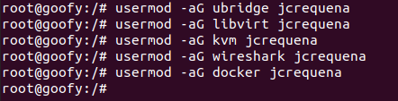
Figura 9. Agregar el usuario a los grupos.
Antes de ejecutar gns3, hay que cerrar la sesión actual o reiniciar el equipo. A continuación, una vez se inicia la sesión de nuevo, hay que ejecutar gns3 en la consola para que arranque el sistema gns3.
Referencias
Obra publicada con Licencia Creative Commons Reconocimiento No comercial Compartir igual 4.0